Math Behind Logistic Regression Algorithm
One often deals with real life problems of choosing between different sets of things. For example, whether a customer is going to buy a product or not, which package a customer is going to subscribe. All these come under the gambit of classification, predicting which set a particular data point belongs.
Linear classification is the means by which classification is made based on predictor function that is linear, combining weights with the values of dependent variable. Non- linear operations may be involved in this process.
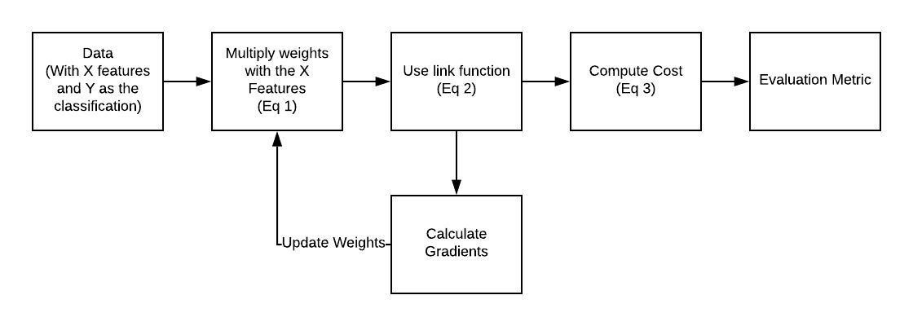
Logistic regression Flow
In the above two equations, Eq 1 associates each feature with a weight. The reason why we call logistic regression one of the generalized linear model. Following which there is a use of link function(explanation will be provided below) that converts the data provided within the range of (0,1).Here Eq 2. is the link function which is a sigmoid function and z is a value that gives you the probability of one of the events happening.
Logistic Regression process
Given a data(X,Y), X being a matrix of values with m examples and n features and Y being a vector with m examples. The objective is to train the model to predict which class the future values belong to. Primarily, we create a weight matrix with random initialization. Then we multiply it by features.
Eq 1.
We then pass the output obtained from Eq 1. to a link function.
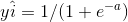
Link Function
This is followed by calculating the cost for that iteration whose formula is
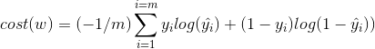
cost function
The derivative of this cost is calculated following which the weights are updated.
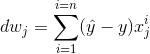
Gradient
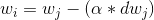
Update
The entire code in python for logistic regression from scratch is
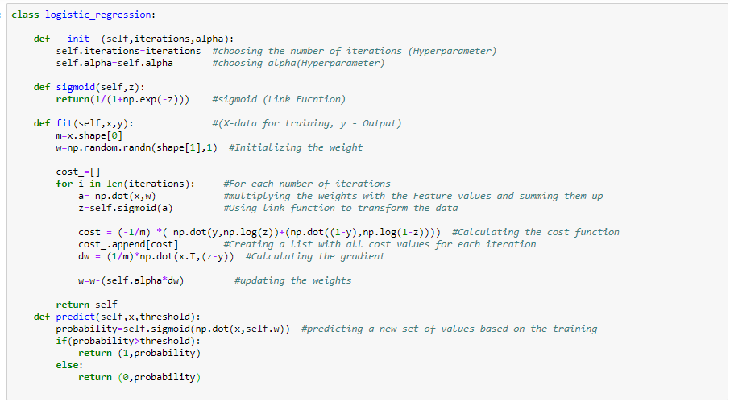
Logistic regression from scratch
Math and Intuition behind Logistic Regression
The goal of the logistic regression algorithm is to create a linear decision boundary separating two classes from one another. This decision boundary is given by a conditional probability.
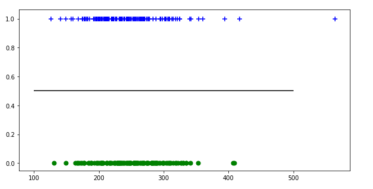
The line in between is the decision boundary with two classes above and below it.
Let us assume that the class above the black line(decision boundary) i.e. the ‘+’ is classified as ‘1’ and class below the decision boundary ‘o’ is defined as ‘0’. What logistic regression does is that it calculates a conditional probability i.e.
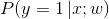
Probability for class ‘1’
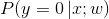
Probability for class ‘0’
Logistic regression calculates the probability of a particular set of data points belonging to either of those class’ given the value of x and w. The logic is that say, we have a set of values that we obtain from negative infinity to positive infinity based on the linear model, we need to narrow it down to a score that is in between zero and one as probabilities always are in that range and logistic regression talks about probabilities. The link function, sigmoid function takes care of this work.
The use of exponent in the sigmoid function is justified as probability is always greater than zero and the property of exponents takes care of this aspect. Then we need to worry about the limiting the values less than one, which is done by dividing the value in the numerator by value greater than it.
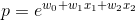
Probability greater than 0
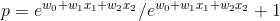
Probability greater than 0 and less than 1
Now to get the probability of the alternate class we just have to subtract the value obtained above by 1. When we divide the above equation by the numerator term, we obtain the sigmoid link function
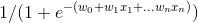
Odds Ratio
We hear the term “what are the odds of a team winning”, from many people around us. Odds is basically the probability of an event occurring to that of an event not occurring. In logistic regression, the odds of an event occurring can be given by the formula
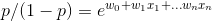
Odds of an event occurring
The log odds or log-likelihood of the event is given by taking log of the above equation. The odds ratio is log transformed to remove the restricted range as probabilities are in the range (0,1).Log transformation changes this to values from negative infinity to positive infinity. The second reason is that log values are easier to interpret.
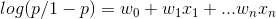\
Log(odds)
If we take into consideration the conditional probability of getting an output P(y=1|x;w) is equal to the sigmoid function and the p(y=0|x;w) = 1-p(y=0|x;w) and if take in that our sample has a Bernoulli distribution then the cost function for the logistic regression model is derived by,
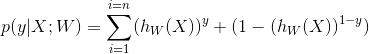
Taking log this equation can be transformed into the cost function above. The presence of the minus sign in the beginning of the function is to ensure we try minimizing the negative of likelihood instead of maximizing the value as gradient descent minimizes the error.
The Scikit-learn implementation of logistic regression is given below
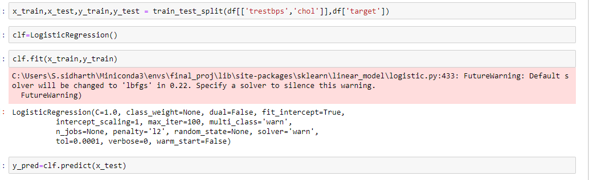
Sklearn implementation